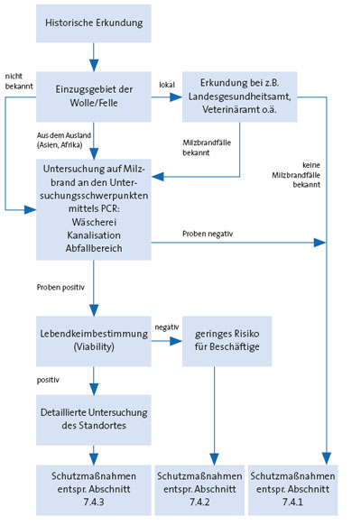

Liegen dem Auftraggeber Informationen über bestimmte Gefährdungen vor, so muss dieser entsprechend § 5 Absatz 3 Unfallverhütungsvorschrift „Grundsätze der Prävention“ (BGV A1) die Informationen vorab an den Auftragnehmer weiterleiten. Hat der Auftraggeber keine oder keine ausreichende Informationen und der Auftragnehmer hat einen begründeten Verdacht, dass Gefährdungen vorliegen,muss er seinerseits noch vor Aufnahme der Tätigkeit Erkundigungen zu Art und Ausmaß möglicher Gefährdungen einholen. Eine Abstimmung der Schutzmaßnahmen zwischen Auftraggeber und Auftragnehmer ist vor Aufnahme der Tätigkeiten zu treffen. Vergibt der Auftragnehmer Aufträge, die er übernommen hat, an Nachunternehmer weiter, so treffen ihn die Pflichten des Auftraggebers selbst. Insbesondere hat er den Nachunternehmer bei der Gefährdungsbeurteilung bezüglich der betriebsspezifischen Gefahren zu unterstützen.
Der Auftrag erteilende Unternehmer hat sich zu vergewissern, dass die Beschäftigten des Fremdunternehmers hinsichtlich der Gefahren für ihre Sicherheit und Gesundheit während ihrer Tätigkeit eine angemessene Anweisung erhalten. (vgl. BGV A1).
Tätigkeiten mit Boden oder Grundwasser sind i.d.R. nicht gezielte Tätigkeiten im Sinne der BioStoffV. Gezielte Tätigkeiten können in Ausnahmefällen bei der Boden- oder Grundwassersanierung vorkommen, siehe Abschnitt 6.3.
Sind alle Mikroorganismen der Anreicherungskultur zumindest der Spezies nach bekannt (z.B. bei kommerziellen Spezialpräparaten), so handelt es sich umeine gezielte Tätigkeit imSinne der Biostoffverordnung. Die Zuordnung zu einer Schutzstufe erfolgt unter Berücksichtigung der Einstufung der eingesetzten Mikroorganismen in Risikogruppen und anhand des Ausmaßes einer Exposition durch die entsprechende Tätigkeit. Enzympräparate sind wie Starterkulturen anzusehen.
Nach § 8 der BioStoffV hat sich der Arbeitgeber bei der Gefährdungsbeurteilung fachkundig beraten zu lassen, sofern er nicht selbst über die erforderlichen Kenntnisse verfügt. Fachkundige Personen sind insbesondere der Betriebsarzt und die Fachkraft für Arbeitssicherheit.
Vor Beginn der Bodenarbeiten ist eine sorgfältige historische Erkundung zu empfehlen. Im Rahmen der historischen Erkundung ist das biologische Gefährdungspotenzial des zu bearbeitenden Geländes zu ermitteln und zu bewerten.
Dabei ist besonders auf Gerbereistandorte oder andere Standorte der Lederindustrie zu achten. Hierfür können Altlastenkataster, die aufgrund des Bundesbodenschutzgesetztes angelegt wurden, herangezogen werden. Auch Daten der Landesgesundheitsämter oder Veterinärämter können hierfür genutzt werden.
Tätigkeiten, bei denen Böden mechanisch bewegt werden, können zu einer Entwicklung von Stäuben führen. Diese Stäube können inhalativ aufgenommen und in geringerem Umfang durch Verschlucken auch in den Magen/Darm-Trakt gelangen.
Weiterhin kann es bei händischen Tätigkeiten auch zu einem direkten Hautkontakt und damit zur Aufnahme biologischer Arbeitsstoffe, z.B. über verletzte oder geschädigte Hautpartien, kommen.
Tätigkeiten und Umgangmit Grundwasser umfassen z.B. die Förderung von Grundwasser imRahmen von Absenkungsmaßnahmen,Verlegen von Rohrleitungen, Einbau von Drainagen.
Dabei überwiegt als Expositionsmöglichkeit der Hautkontakt. Allerdings kann es bei verschiedenen Tätigkeiten, wie dem Ableiten von gefördertem Grundwasser in offene Systeme, auch zur Bildung von Aerosolen und damit zur Möglichkeit der inhalativen Aufnahme kommen.
Bei Arbeiten auf Milzbrandverdachtsstandorten sollte für die Gefährdungsbeurteilung wie in der Abbildung 2 beispielhaft dargestellt, vorgegangen werden. Besonders relevant ist dabei eine sorgfältige historische Erkundung. Hierfür sind auch Daten der verantwortlichen Behörden, z.B. Landesgesundheitsämter oder Veterinärämter, heranzuziehen.War das Einzugsgebiet für die in den entsprechenden Anlagen verwerteten Leder bzw. Felle lediglich lokal und sind in der Vergangenheit keine Milzbranderkrankungen aufgetreten, ist das Risiko als relativ gering zu beurteilen. Kamen die Felle jedoch aus dem Ausland oder sind z.B. keine Daten mehr verfügbar, sind weitere Untersuchungen durchzuführen. Diese sollten zunächst auf „Schwerpunkte“ (z.B.Wäscherei) beschränkt bleiben. Siehe hierzu auch „Leitfaden zu Erkundung ehemaliger Gerbereistandorte“.
Ein wichtiger Verfahrensschritt bei der Bodensanierung ist die mechanische Bearbeitung des Bodens, z.B. beim Anlegen oder Umsetzen von Mieten. Dabei werden größere Mengen Staub freigesetzt, der Sporen und Mikroorganismen enthält, die über die Atmung aufgenommen werden können.
Weiterhin kommt es beim Versprühen von Nährlösungen/Prozesswasser zur Bildung von Nebel, der gleichfalls biologische Arbeitsstoffe enthalten kann.
Die Herstellung organischer Zuschlagstoffe als Strukturverbesserer entspricht im Prinzip der Grünschnittkompostierung. Die dabei anfallenden Arbeiten sind daher mit einer ähnlichen Exposition der Arbeitnehmer gegenüber Mikroorganismen vergleichbar (vgl. TRBA 214 Abfallbehandlungsanlagen einschließlich Sortieranlagen in der Abfallwirtschaft).
Bei diesen Verfahren ist eine Exposition gegenüber den biologischen Arbeitsstoffen nur beim Umgang mit Prozesswasser und Nährlösungen, z.B. bei Wartungs- und Reingungsarbeiten, bei Anlagenreparaturen sowie beim Ansetzen von Nährlösungen möglich. Der wichtigste Aufnahmepfad verläuft über die Haut. Die Bildung von Aerosolen und damit eine inhalative Aufnahme ist nur bei Havariefällen zu erwarten.

| Abbildung 2: | Entscheidungsdiagramm für die Gefährdungsbeurteilung bei Milzbrandverdachtsstandorten: hier beispielhaft Gerbereistandorte |
Im Folgenden einige Anhaltspunkte zur Einordnung in Schutzstufen:
Schutzstufe 1
Schutzstufe 2
Schutzstufe 3
Nachweis von Milzbranderregern, z.B. bei Standorten der Lederindustrie (siehe hierzu auch Gefährdungsbeurteilung entsprechend Abbildung 1)